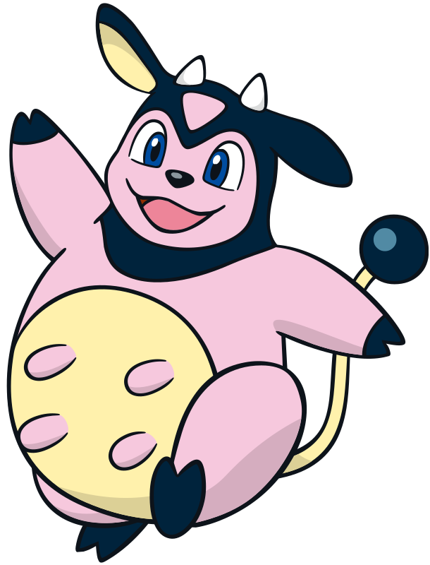

Miltank
Remember how I said that there was a Pokemon that I didn't like because it's ugly and I had a negative experience with it in the past? This is that Pokemon. Miltank is a Normal type introduced in Generation 2. It is also part of one of the hardest boss battles in the entire Pokemon series. Miltank is first seen being used by Whitney, the third Gym Leader in the Generation 2 games. In my oppinion, Miltank is too strong to be fought at this point in the game. It hits way too hard, and even after you damage it, it can heal itself with its signature move, Milk Drink.
Even in terms of competitive battles, there are so many Normal types that are better than Miltank.
A few Normal types that are better than Miltank
- Snorlax
- Porygon2
- Ditto